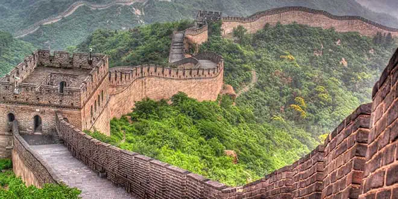
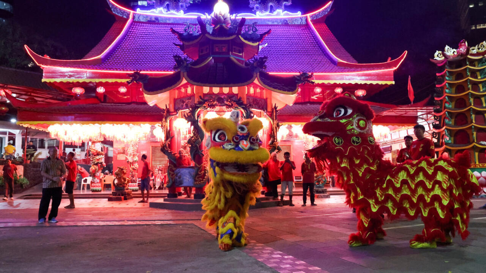

Sobre China
China es un Estado nacional cuyo nombre oficial es República Popular China. Se encuentra en Asia, y es uno de los países más extensos, más poblados y más culturalmente ricos del planeta. Es una de las seis cunas conocidas de la civilización, junto con Egipto, Mesopotamia, India, Mesoamérica y la Región Andina Sudamericana.

Acerca de China
Características
1. Su población es de 1423 millones de habitantes, lo que lo convierte en el segundo país más poblado del mundo (después de India).
2. Tiene una superficie de 9.597.000 km2, lo que representa una densidad de población de 148,2 habitantes por km2.
3. Su capital es la ciudad de Beijing, que cuenta con más de 20 millones de habitantes.
4. Presenta una gran variedad de climas, que incluyen variaciones de los templados, áridos, continentales y polares.

Características de China
Población
China tiene una extensión de 9.597.000 kilómetros cuadrados, por lo que es el segundo país más grande de Asia después de Rusia y el cuarto más extenso del mundo. Tiene una población de 1.423.000.000 habitantes, y una densidad de población de 148,2 habitantes por kilómetro cuadrado.
Población de China
Economía
China tiene la segunda economía más grande del mundo, detrás de Estados Unidos. En las últimas décadas ha tenido un crecimiento económico sin precedentes, de un promedio de 8 % por año. Es el principal exportador del mundo, y el segundo importador.
La mayoría de los países del planeta tienen a China como uno de sus principales socios económicos, y en la actualidad es frecuente encontrar empresas chinas en casi todos los países del mundo.
Economía de China